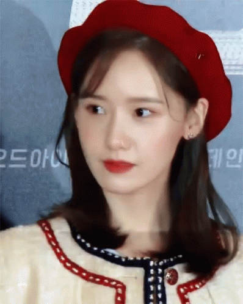
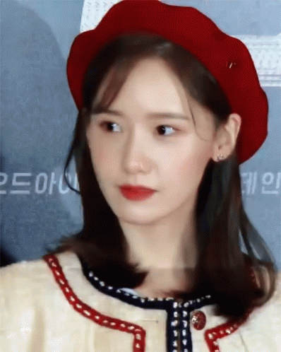

Vẻ đẹp trong sáng, xinh như hoa hậu Hàn Quốc của chị cả BLACKPINK vốn rất nổi tiếng trong giới thần
tượng xứ Hàn.
Người ta ví von cô là nữ idol đẹp nhất Kpop. Nếu so sánh vẻ đẹp của Jisoo với tiêu chuẩn nhan sắc ngày
nay, dễ dàng nhận thấy người đẹp sinh năm 1995 hội tụ đủ những yếu tố cần có của một hoa hậu quê hương đáng mơ ước.
Những chi tiết đó kể đến như khuôn hàm, đôi mắt sắc sảo, mũi môi đẹp và tỉ lệ khuôn mặt 1: 1: 1. Đây là
tỉ lệ từ đỉnh đầu xuống cánh mũi và cuối cùng là cằm) gần như hoàn hảo.
Dù đã debut được bao lâu thì Jisoo luôn lọt vào top bộ ba bất bại trong cuộc chiến nhan sắc (Irene,
Tzuyu,
Jisoo)

Vẻ đẹp của “Original visual” của Red Velvet – Irene đã được biết đến nhiều trong cộng đồng fan Red
Velvet nói riêng và fan Kpop nói chung.
Trong nhiều năm kể từ khi Red Velvet ra mắt, Irene luôn được coi là đỉnh cao
nhan sắc của các nữ thần tượng xứ Hàn.
Nhiều khán giả cũng thẳng thắn khẳng định chắc nịch. Không ngoa khi nhận xét ngoại hình xinh đẹp
xứng đáng với cụm từ “Mỹ nữ đẹp nhất Gen 3”.
Lisa bất ngờ giữ vị trí á quân trong top 25 của một tạp chí gần đây, vượt mặt cả Jennie. “Em gái
quốc
tế”
sở hữu vẻ đẹp búp bê sống với đôi mắt to tròn, sống mũi cao, gương mặt sắc nét. Đặc biệt, tỉ lệ cơ
thể
với đôi chân dài
miên man của Lisa càng khiến cô trở nên quyến rũ hơn bao giờ hết.
Không những thế, cô còn rất hay thuộc vào top tìm kiếm trên mạng xã hội. Cho đến nay, cô là nữ idol
Kpop
có số lượng
người theo dõi đông đảo nhất trên các nền tảng mạng xã hội như Instagram, Twitter,….


Dù ngoại hình thường gây tranh cãi nhưng Nancy vẫn thành công vượt mặt nhiều đàn chị.
Cô chiếm vị trí thứ 6 trong top 25. “Nữ thần lai” sở hữu gương mặt đẹp hoàn hảo, thân hình gợi cảm “xịt máu mũi” và thần thái hút hồn,
gợi cảm vượt tuổi.


 

Yoona từng được đặt danh hiệu là "nữ hoàng quảng cáo" sau khi xuất hiện trong nhiều quảng cáo và trở
thành gương
mặt đại diện cho nhiều nhãn hiệu.Năm 2012, cô xuất hiện trong ít nhất 20 phim quảng cáo và
xếp
thứ năm
trong số những người nổi tiếng tham gia nhiều quảng cáo nhất. Cô cũng đã đảm nhận vai trò
gương
mặt đại diện cho nhãn hiệu mỹ phẩm Innisfree trong 11 năm liên tiếp.
Năm 2014, Yoona được CNN đánh giá là "một
trong
những tên
tuổi lớn ở khu vực châu Á-Thái Bình Dương" góp phần giúp các nhãn hiệu mỹ phẩm Hàn Quốc trở nên phổ
biến
tại thị
trường Trung Quốc.
Năm 2016, cô được tạp chí Forbes bình chọn là một trong 30 người nổi tiếng
dưới
30 tuổi trong
lĩnh vực thể thao và giải trí có sức ảnh hưởng lớn nhất tại châu Á.]Yoona từng được đặt danh hiệu
là
"nữ hoàng
quảng cáo" sau khi xuất hiện trong nhiều quảng cáo và trở thành gương mặt đại diện cho nhiều nhãn
hiệu.
Năm 2012, cô xuất hiện trong ít nhất 20 phim quảng cáo và xếp thứ năm trong số những người nổi tiếng
tham gia nhiều
quảng cáo nhất. Cô cũng đã đảm nhận vai trò gương mặt đại diện cho nhãn hiệu mỹ phẩm Innisfree trong
11
năm
liên tiếp.
Năm 2014, Yoona được CNN đánh giá là "một trong những tên tuổi lớn ở khu vực châu Á-Thái
Bình
Dương"
góp phần giúp các nhãn hiệu mỹ phẩm Hàn Quốc trở nên phổ biến tại thị trường Trung Quốc. Năm
2016,
cô được
tạp chí Forbes bình chọn là một trong 30 người nổi tiếng dưới 30 tuổi trong lĩnh vực thể thao và
giải
trí có sức
ảnh hưởng lớn nhất tại châu Á.
Rosé chiếm vị trí thứ 4 trong bảng xếp hạng. Vẻ ngọt ngào, nữ tính của “bông hồng nước Úc” chưa
bao giờ khiến người hâm mộ thất vọng. Cô thường chọn cho mình màu tóc sáng.
Chính vì vậy, một
trong những nữ idol đẹp nhất Kpop này lại càng “nổi bần bật”. Phong cách của Rosé ngày càng đáng
chú ý hơn bao giờ hết nhờ vào đội ngũ stylist của nhà YG.